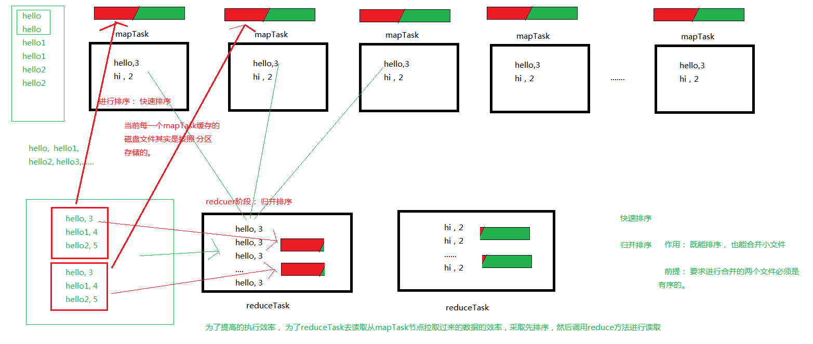
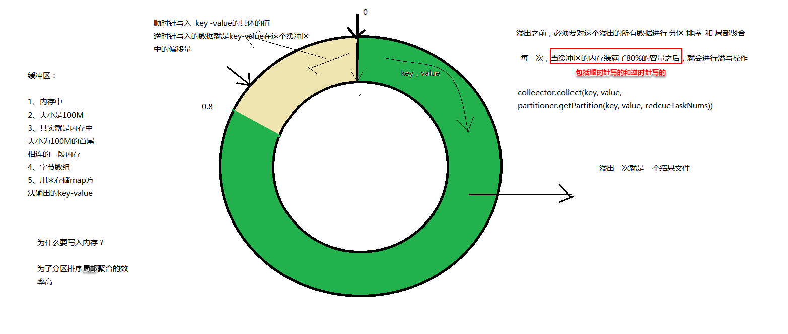
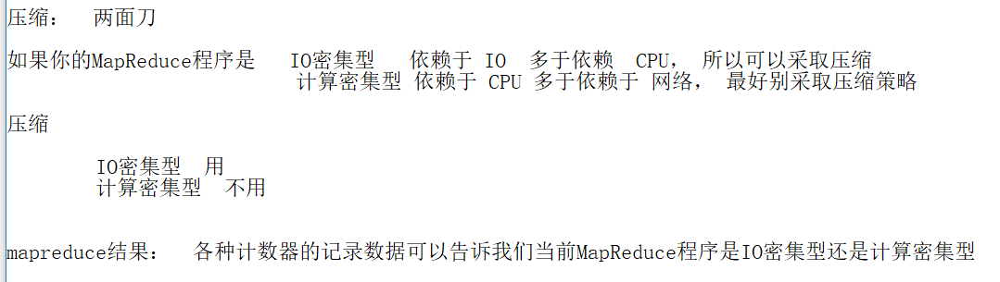
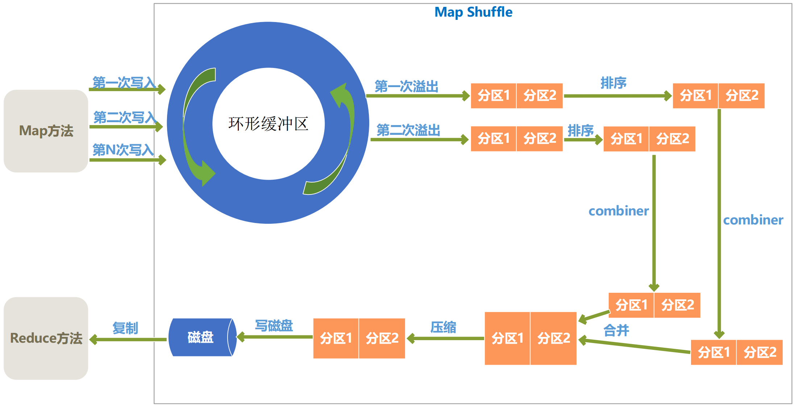
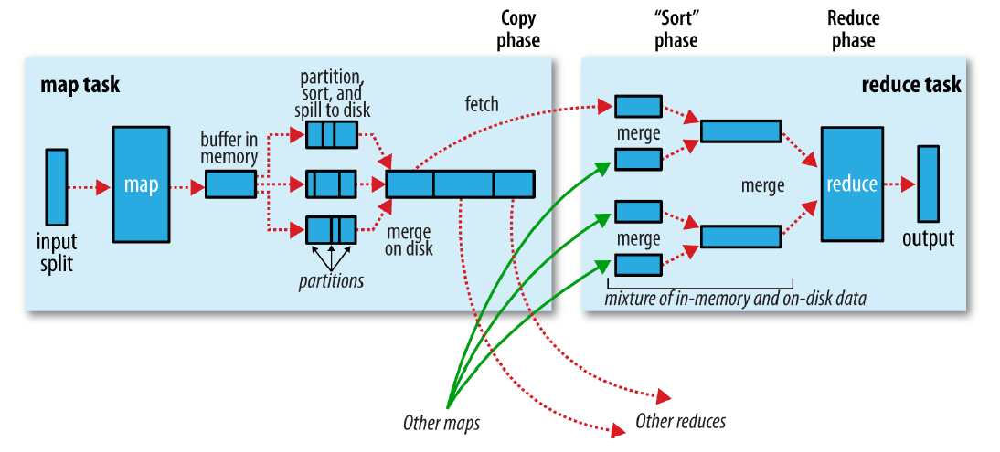
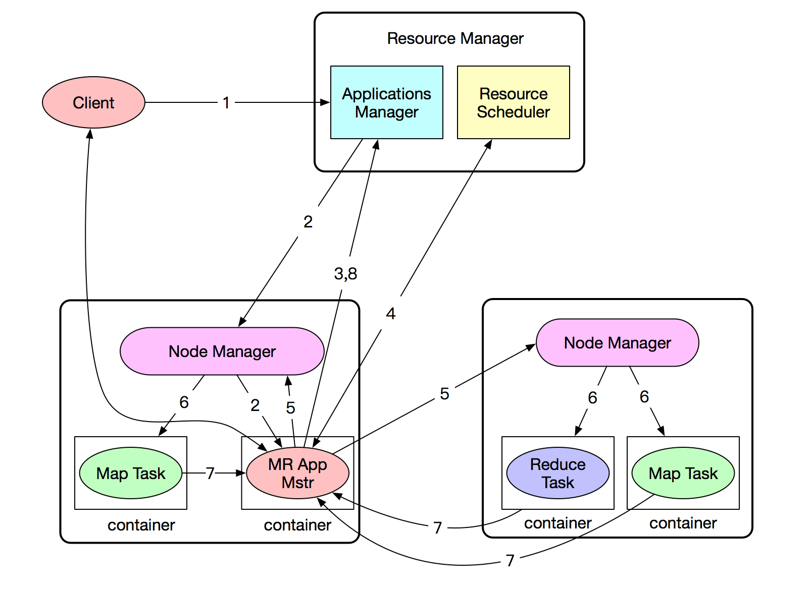
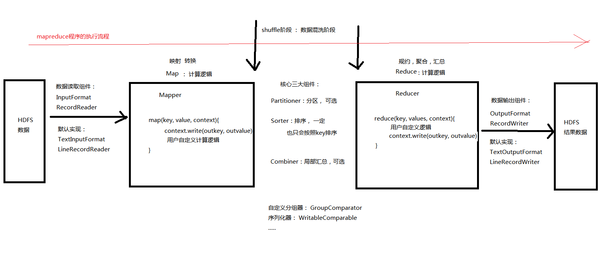
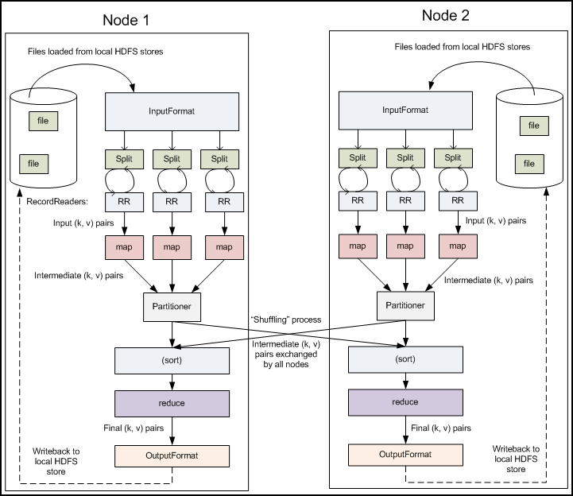
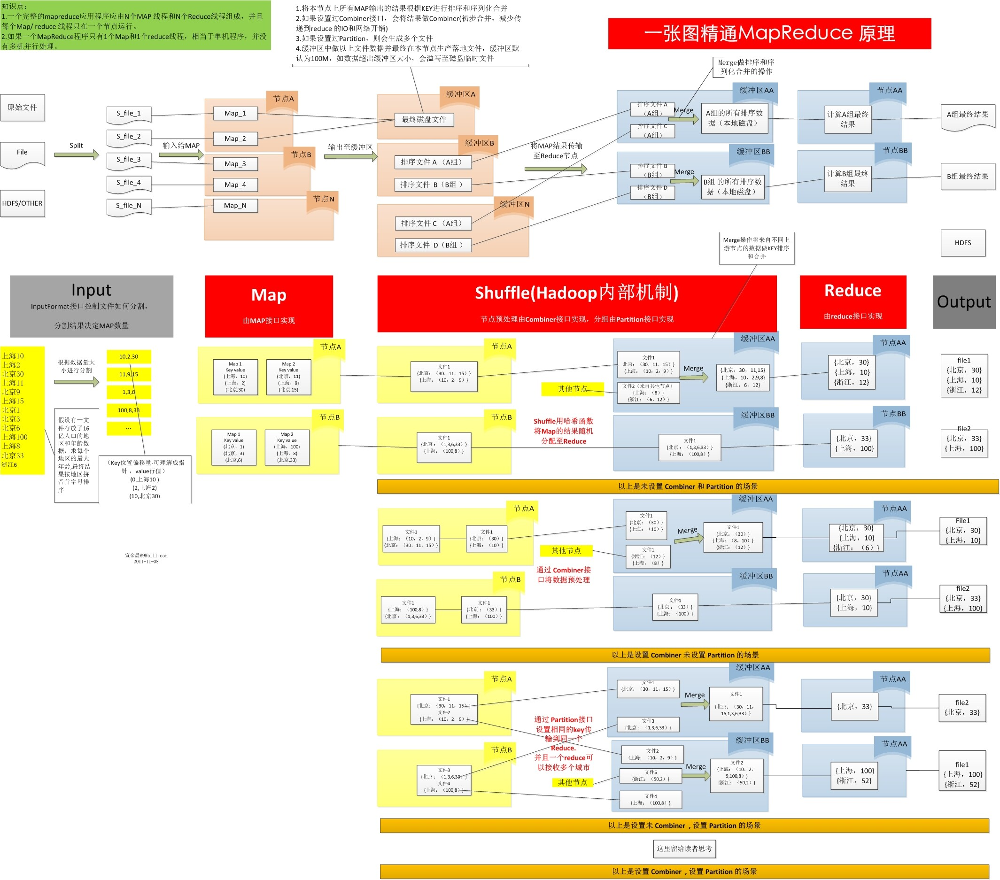
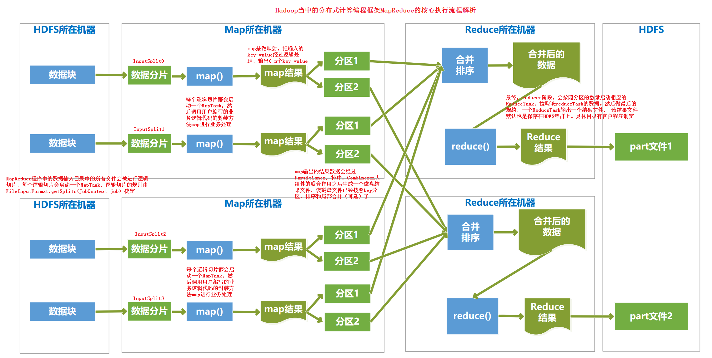

一、shuffle概述
(1)为什么要用shuffle



shuffle详解、MapReduce的执行逻辑_files/Image [1].png)
二、MapReduce的执行逻辑
(1)首先执行mapper组件,每个mapTask将数据按行切分好,并按照map方法的规则定义好输出的key和value
map输出的key和value进入环形缓冲区。并且在缓冲区的内存装满了80%之后,就会进行溢写操作,溢出到磁盘
在溢出的过程中:
(2)执行Partitioner组件,进行分区。
如果是默认的Partitioner组件,每个mapTask里的数据分别按照Partitioner组件默认的hashPartition规则进行分区,将一个
mapTask分成若干个区。job.setNumReduceTasks();设置了有多少个分区,到时候就会有
多少个分区,也就是说最后会有多少个ReduceTask,也就是会有多少个结果文件
如果是自定义Partitioner组件,自定义的分区规则也是按照key中的某个字段进行分区,和分组、排序
的原理差不多,不过Partitioner组件的分区规则与后面的分组、排序的规则并没有直接的关系
比如说我们可以按照key中的a字段进行分区、b字段进行分组、b和c字段进行排序
(3)执行sorter组件进行快速排序。
每个mapTask会在Partitioner阶段结束时将结果数据进行快速排序(sort)(快速排序是所有数据在内存中进行排序),
实际上因为结果数据都是从环形缓冲区里一次次溢出的,所以每次排序只能对一次溢出的结果进行快速排序
(4)如果有combiner组件, 则会对一个mapTask分成的若干区分别进行聚合操作,并分别对每个mapTask执行一样的操作,
也就是说combiner的作用域是单个单个的mapTask的数据,每次执行combiner是在一个mapTask
上执行的,所以是局部聚合,而reducer是对所有maptask汇总过来的数据进行聚合
(5)将一次溢出(已经分好区,排好序,局部聚合完毕)的结果数据,序列化,写入磁盘
(6)将一个maptask所有溢出的同一个分区的结果文件进行归并排序。
(归并排序的优点是可以将大部分数据放在磁盘中,每次只将小部分数据调入内存进行排序,但归并排序要求所有的子文件
是有序的,这样就可以直接进行归并,归并排序是一个不断合并小文件的过程)
此次归并排序会把由同一个mapTask溢出的属于同一个分区的一个个结果数据的小文件合并成一个大文件。
(当然是同一个分区的数据才进行归并,不同分区的数据是不能归并在一起的)
(6)网络传输
(7)执行sorter组件对一个reduceTask得到的来自所有mapTask的属于该reduceTask的小文件进行归并排序。
每个ReduceTask会在reduce阶段开始前进行归并排序(merge)。
归并排序会把由不同的mapTask传输过来的小文件合并成一个大文件,使得等待该ReduceTask处理的所有数据有序
(8)执行reducer组件,对每一个key的values集合分别进行一次性集中处理,处理完成后最终一个reduceTask得到一个结果文件。
可以看出,在执行reducer前,所有mapTask的数据已经全部汇总到各个分区里,然后每个
分区启动一个ReduceTask,对数据进行聚合操作
所以默认的执行顺序应该是: mapper、分区(Partitioner)、分组和快速排序(sorter)、combiner(可有可无)、
将溢出数据序列化到磁盘、归并排序、网络传输、反序列化、分组和归并排序(sorter)、reducer。
反序列化也可能是在分组和归并排序之后、reducer之前
(二)到底在哪里使用combiner?
1，map输出数据根据分区排序完成后，在写入文件之前会执行一次combiner操作(前提是作业中设置了combiner组件);
2，如果map输出比较大，溢出文件个数大于3(此值可以通过属性min.num.spills.for.combine配置)时，在merge的过程(多个spill文件合并为一个大文件)中前还会执行combiner操作;
shuffle详解、MapReduce的执行逻辑_files/Image [2].png)
三、MapReduce执行流程要点
1、每个mapTask会在map阶段结束时(实际上是在Partitioner之后)将结果数据进行快速排序(sort)(快速排序
是所有数据在内存中进行排序),使得传输到每个ReduceTask的小文件是有序的;
每个ReduceTask会在reduce阶段开始前进行归并排序(merge)(归并排序的优点是可以将大部分数据放在
磁盘中,每次只将小部分数据调入内存进行排序,但归并排序要求所有的子文件是有序的,这样就可以
直接进行归并,归并排序是一个不断合并小文件的过程),归并排序会把由不同的mapTask传输
过来的小文件合并成一个大文件,使得待该ReduceTask处理的所有数据有序。
所以默认的执行顺序应该是mapper、分区(Partitioner)、分组和快速排序(sorter)、combiner(可有可无)、
序列化到磁盘、网络传输、反序列化、分组和归并排序(sorter)、reducer。
从上面的顺序可以看出:
(1)分区与后面的分组排序没有任何关系,肯定是先将一个mapTask的结果数据分成若干个区,
再对每个分区的数据进行分组排序。因为不按照分区的排序是没有意义的,将来又不会由
一个ReduceTask处理,又不会在同一个结果文件,所以不可能是对整个mapTask的结果数据
直接进行分组排序,要先分区的
(2)就算有combiner也不会增加sorter组件的使用次数。因为sorter组件本来就会执行两次,只不过两次
执行的是sorter组件的不同部分,前一次是快速排序,后一次是归并排序。而combiner组件
本来就是对一个mapTask进行局部聚合汇总,所以也并不需要归并排序来合并多个mapTask
传输过来的小文件,所以combiner的引入并不会增加任何sorter组件的使用次数,对MapReduce
的其他组件处理数据的方式也没有任何影响
2、reduce读到的文件时从磁盘中读的,也就是说序列化要先写到磁盘,然后再从磁盘进行网络传输,然后
网络传输也是直接传到磁盘,再从磁盘调入内存,供reducer使用
3、reduce阶段之前每个reduceTask的所有数据排好序,则每次reduceTask扫描mapper阶段过来的结果文件
只需要扫描一次(每扫描一次就是一组key"相同"的key values集合)
4、快速排序是发生在分区之后,也就是数据还没序列化写入磁盘之前,也是进行网络传输之前
5、每个mapTask执行完之后,他的结果文件就存储在执行这个mapTask的节点的磁盘当中
6、执行mapTask时"数据优先大于算法优先",也就是说一般待处理的文件的某个数据块备份储存在哪几个节点,
那这个数据块将对应启动的mapTask程序,就会在这几个节点中选择一个执行
7、一个mapTask中的结果数据不管最后会被分别传输到几个reduceTask中去,一个mapTask的的结果数据都会将所有分区
的结果数据储存在同一个文件中,只不过在这个结果文件中已经将结果数据分组排序好了,并且会标识好从第几行
到第几行(起始偏移量到结束偏移量)是属于哪个ReduceTask的数据,到时候哪个ReduceTask要数据的时
候就可以按照标记传输
每个ReduceTask自己需要的数据,会从每个mapTask中获取属于自己分区的数据,传输到ReduceTask自己所在节点
的磁盘中形成一个小文件,然后和其他mapTask的传过来形成的文件利用归并排序算法归并成一个大文件
也就是说,一个mapTask只会生成一个结果文件,而这个结果文件里的数据会按照分区存储
8、每一个mapTask都会对应一个环形缓冲区(默认是内存中100M大小的空间),向环形缓冲区写入的数据是map方法
输出的key-value。
其实在写入缓冲区之前,每个key-value的分区编号就已经求出来了,组成了一个三元组<key,value,partition>
所以,在往缓冲区里写某个key-value时其实是在写一个三元组<key,value,partition>。待缓冲区里数据
写到80%时,开始把这80%的数据全部溢出。
在溢出的过程中进行先分区(Partitioner)、再分组排序(sorter)、最后局部聚合(combiner)。(这已经是在shuffle阶段了)
所谓的"在溢出的过程中",可能是先把要溢出的所有数据挪到内存的其他地方,然后开始进行分区(Partitioner)、再
分组排序(sorter)、最后局部聚合(combiner); 也可能是直接在环形缓冲区里进行分区(Partitioner)、再分组排序(sorter)、
最后局部聚合(combiner)。
反正分区和排序和局部聚合是要在内存中进行的
进行完分区和排序和局部聚合这些操作后,才是序列化,写入到磁盘
分区和排序的方法可能是:用快速排序的方法先把分区号相同的放到一堆,再把每个分区按照key"相同"的进行分组,再在组内
用快速排序对key进行排序。
在所有数据溢出到磁盘文件后,也会对该mapTask的所有溢出来的小文件进行归并排序(merge),将这些小结果文件
合并成一个大的结果文件(所以归并排序也并不是只在网络传输后、reducer执行前发生一次)
9、真正的shuffle阶段是从map阶段的context.write()写出去之后,到reducer组件的reduce方法接收到key values
之前
10、网络传输之后的归并排序,如果发现要合并的总数据大小(所有小文件的总大小)比较小的话,就直接在内存进行归
并;如果太大的话,就会放到磁盘,只将即将进行排序的数据放到内存进行排序。
11、其实并不是说当所有mapTask都执行成功后,才开始执行reduceTask,而是,当绝大部分的mapTask都执行成功,
reduceTask就可以提前启动了。提前启动reduceTask的作用是:预先拉取已经执行完毕的mapTask节点上
中间结果,先对部分结果做合并。
12、序列化:
(1)定义：
i. 序列化：把对象状态按照一定的格式转换成有序字节流，以便在网络上传输或者保存在本地文件中
ii. 反序列化：从文件中或网络上获得序列化后的对象字节流后，根据字节流中所保存的对象状态及描述信息，重建对象
(2). 序列化的作用
将对象变成一串字节流
不用序列化能否保存磁盘上？
可以，但是你要将对象中一个个的基本属性进行写入操作，比如int之流, 当然, 按你自己希望的顺序，.
序列化和持久化之间的关系
序列化过程是持久化的一种方式，当然Java中你可以选择适当的方式编码(utf-8)。
Java序列化的过程就是将对象按照Java约定的序列化方式变成一串字节流，当然大家都知道那是很烂的。。。。
(3)序列化和压缩的目的都是为了节省空间？有啥区别？
这里可以打个比方:
序列化可理解为将一个组合办公桌（对象）按标准拆解为散件，以方便运输（网络上传输），到达目的地后再重新组装成一个整体办公桌，所以序列化的目的不是压缩，而是变成 流以方便网络传输并能重新组装为对象, 后来大家又发现一张桌子有四条腿，不需要运输1111这种方式，改成1,4就可以了，这就是压缩了。
因此， 序列化可以理解为对象级别的压缩方式。
四、关于各个组件的思考:
(1)关于sorter
sorter的功能是分组和排序。
默认情况下,分组规则和排序规则是一样的:也就是说,如果不改变分组规则,
那么按照key中的a和b进行排序,那么就默认为只有当key中的a和b同时一样时,才认为是同一组的数据。
分组的意义在于:同一组的数据就认为是同一个key(尽管他们可能只有key中的某个字段是相同的),
到了reducer阶段就会被调用一次reduce方法就处理完一组,因为reduce方法传入的参数是同一个
key的values集合,而不是一对一对的key-value键值对。也就是说调用一次reduce方法就处理完一个分组
的数据。(虽然说同一组的数据会被认为是同一个key,但reducer还是会把所有的key记录下来,
因为这些key实际上可能并不相同)
排序是指按照key排序,默认的排序规则是按照key的hash值从小到大排序?
而且sorter应该是先分组后排序(分成组后组内再排序)否则先排序后分组不现实)
分组应该是按照key中的某个字段相同的进行分组,再按照key中该字段再加上其他字段一起进行排序
(
用来分组的key的字段可以和用来排序的key的字段不一样。
比如说key共有三个字段:name、course、score。
分组时使用的key的字段是course,即分组时只要course字段相同即认为key相同,即为同一个key。
排序时使用的key的字段是course和score,即同时按照course和score进行排序。
但其实Reducer组件只按分组的结果区分是否是相同的key,与排序阶段无关。也就是说分组时认为是相同的key,
则在reduce阶段就是在同一个key-values的集合里,因为reduce阶段是将key相同的values集合放在一起,
调用一次reducer组件的reduce方法就要将key相同的key-value键值对全部处理完的。
注意:自定义的排序规则只能是自定义的分组规则的细化。也就是说,如果是按照key中的a和b字段进行分组,
那么排序只能是: 首先对分好组的key-value数据按a和b进行排序,按照排序规则决定哪组排在前面,哪组排在
后面(组间排序);然后, 在a和b字段相同的情况下(也就是在同一组的数据),才可以再按照key中的c、d...等进行
排序(组内排序)(也就是说先排各组之间的先后顺序,再排每组组内各个key-value的顺序)
也就是如果分组规则是key的a、b,那么排序规则只能是a、b然后c、d(也可以是b、a然后c、d,毕竟分组
对于是a字段还是b字段优先排序并没有要求,可以根据具体需求改变),而不能是c、d然后a、b,也就是
说分组规则一定要在前面先排好序,也就是说排序规则一定要先分组,再进行组内排序
比如说如果分组规则是按照course进行分组,那么排序规则只能制定为先按照course值的不同进行排序,
在course相同的情况下再按照score值得不同进行排序。(而不能先按照score进行排序,再按照course进行排序)
)
(2)关于Partitioner
对数据进行分区是Partitioner的功能,而分区数reduceTask数和结果文件的数量取决于job.setNumReduceTasks();
分区数=ReduceTask数=结果文件数
(3)关于combiner
combiner是做局部聚合操作,相当于一个小的reducer组件
五、一些跟MapReduce执行流程有关的图(还有一些在: day5-MapReduce基础day1 和 day6-MapReduce基础day2 里面)
(1)

(2)

(3)

(4)

(5)

(6)

(7)

（8）
shuffle详解、MapReduce的执行逻辑_files/Image [3].png)
———————————————————————手写与上传资料分割线———————————————————————